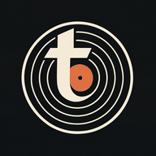

Το Toneary είναι ένας δωρεάν οδηγός δίσκων, καλλιτεχνών και τραγουδιών. Δεν απαιτεί λογαριασμό.
MusicBrainz: δισκογραφίες, στοιχεία, συντελεστές, genres και βαθμολογίες κοινότητας. Cover Art Archive: εξώφυλλα. Discogs: πρόσθετες βαθμολογίες, όταν υπάρχει αντιστοίχιση έκδοσης. LRCLIB: διαθέσιμοι στίχοι. Wikipedia / Wikimedia: βιογραφίες και εικόνες με αναφορά πηγής.
Οι βαθμολογίες εμφανίζονται μόνο όταν υπάρχουν πραγματικές ψήφοι. Κάθε υπηρεσία έχει διαφορετική κάλυψη· η απουσία στοιχείων δεν αποτελεί μηδενική βαθμολογία.
Αγαπημένα, λίστα ακρόασης, σημειώσεις και προσωπικές βαθμολογίες αποθηκεύονται μόνο σε αυτόν τον browser. Κάνε εξαγωγή για αντίγραφο ασφαλείας. Δεν υπάρχει συγχρονισμός μεταξύ συσκευών.
Σε Android / Chrome πάτησε «Εγκατάσταση» όταν εμφανιστεί ή επίλεξε το μενού του browser → Εγκατάσταση εφαρμογής. Σε iPhone: Safari → Κοινή χρήση → Προσθήκη στην οθόνη αφετηρίας.
Τα μεταδεδομένα MusicBrainz διατίθενται σύμφωνα με τις άδειες CC0 / CC BY-NC-SA. Τα εξώφυλλα και οι στίχοι ανήκουν στους δικαιούχους τους. Το app προορίζεται για μη εμπορική χρήση.